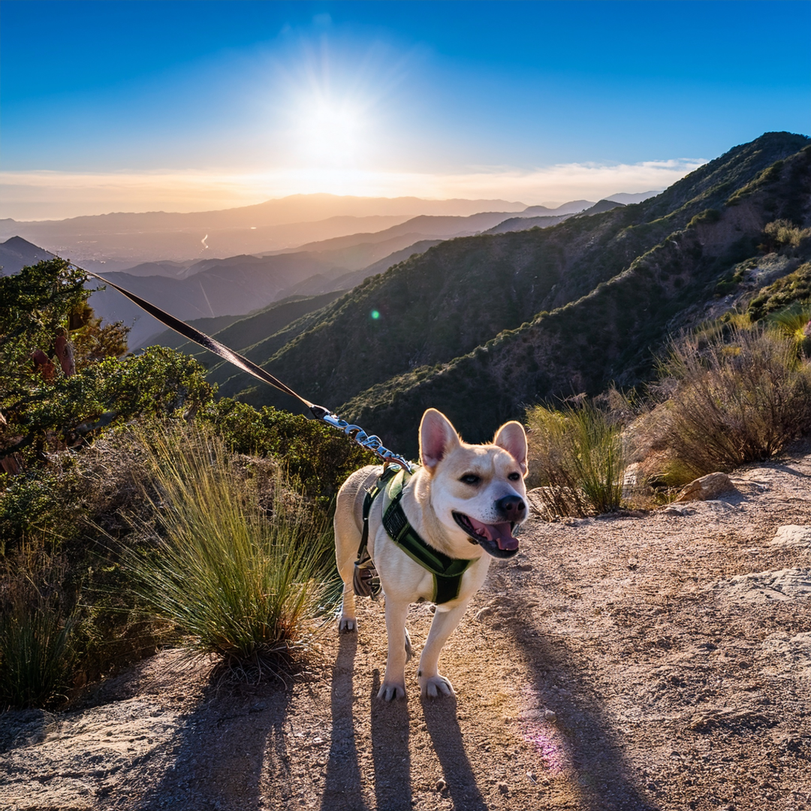

Dogs and Wildlife: Understanding Your Impact

Your dog may seem harmless on the trail, but even the friendliest pets
can significantly impact wildlife and natural habitats. Here’s what
science tells us:
Wildlife Stress and Habitat Disturbance
-
Dogs trigger fear responses: Many animals perceive
dogs as predators, triggering stress responses and causing them to
flee.
-
Persistent stress effects: Regular disturbances can
reduce wildlife’s feeding, resting, and breeding activities, affecting
survival and reproduction.
-
Long-term habitat abandonment: Areas with frequent
dog presence show reduced wildlife activity and biodiversity.
Predation Risks
-
Direct wildlife harm: Off-leash dogs may chase or
harm wildlife, particularly young or nesting animals.
-
Indirect stress: The presence of dogs forces wildlife
to expend extra energy, impacting overall health.
Disease Transmission
-
Spread of diseases: Dogs can transmit illnesses such
as parvovirus, distemper, and rabies to wildlife.
-
Environmental contamination: Dog waste carries
harmful pathogens that can affect soil and water quality.
Erosion and Habitat Damage
-
Physical damage: Off-trail dog activity can trample
vegetation and compact soil, leading to erosion.
-
Water pollution: Dog waste can introduce excess
nutrients and harmful bacteria into waterways.
Benefits of Responsible Dog
Management
Studies consistently show that enforced dog regulations, such as leash
rules or designated dog-free areas, help:
- Increase wildlife diversity and abundance.
- Improve breeding success for sensitive species.
- Reduce environmental degradation.
Wildlife in the Santa Monica
Mountains
Common species affected include:
-
Western Bluebird: Easily disturbed during nesting
periods.
-
California Newt: Often impacted near stream habitats.
-
Gray Fox: Sensitive to disturbances from off-leash
dogs.
The Safety of Your Dog Matters,
Too
Hiking responsibly with your dog protects them, too. Rattlesnakes can
hurt unleashed dogs running off-trail. The following plants are found in
the Santa Monica Mountains and are toxic to dogs: - Common Yarrow -
Castor Bean - Milkweed - Groundsels (ragworts)
Scientific Sources:
- Banks & Bryant (2007), Biology Letters.
-
Lenth, Knight, & Brennan (2008), Natural Areas Journal.
- Parsons et al. (2016), Biological Conservation.
- Hughes & Macdonald (2013), Biological Conservation.
-
Weston & Stankowich (2014),
Free-Ranging Dogs and Wildlife Conservation.
- National Park Service Guidelines.
← Back to Home